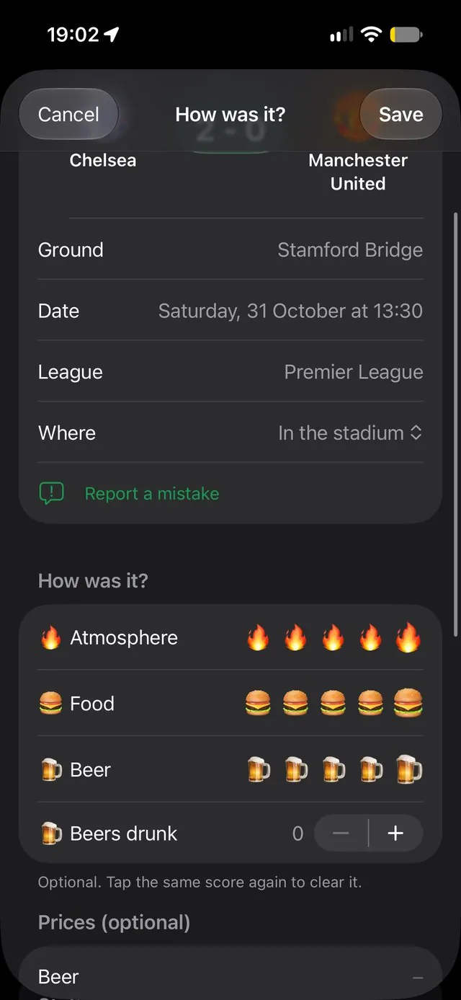
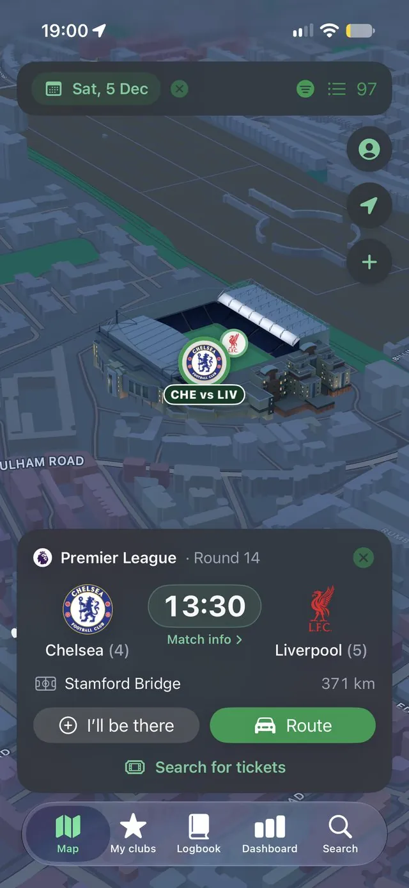
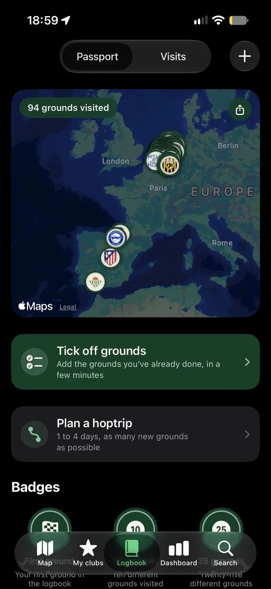
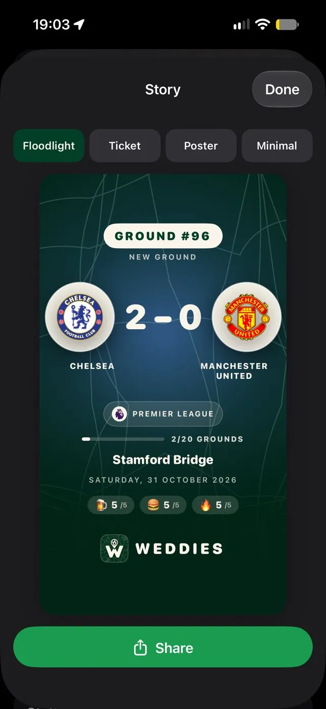
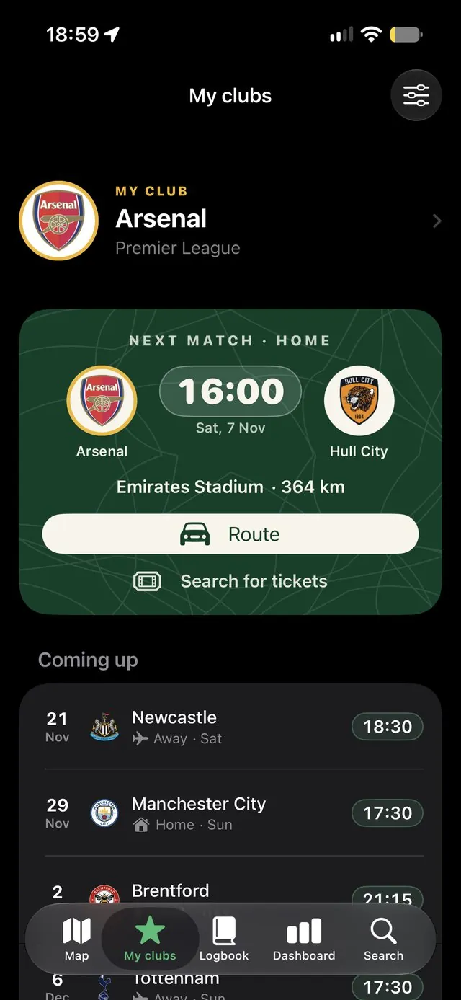

01Logboek
Elke wedstrijd in je logboek
Leg met één tik vast dat je erbij was. Weddies houdt automatisch je grounds, wedstrijden, landen en doelpunten bij, met je beoordeling van sfeer, eten en bier, en notities en foto's per bezoek.

02Kaart
Aftrap, stand en route in één tik
Bekijk alle wedstrijden van vandaag, morgen of later in de week. Tik op een wedstrijd voor de aftrap, de stand en de route naar het stadion. Met “Zin in voetbal?” kies je een moment en een maximale reistijd, en Weddies kiest een wedstrijd voor je.

03Paspoort
Houd elk stadion bij
Elk bezoek komt in je paspoort: een kaart met al je grounds, badges en je voortgang per competitie, inclusief The 92. Alleen wedstrijden die je in het stadion hebt gezien tellen mee.

04Delen
Deel je bezoek als story
Maak na afloop met één tik een story met de uitslag, het stadion en je groundnummer, en deel die direct op Instagram.

05Mijn club
Je eigen club altijd in beeld
De volgende wedstrijd, het programma en de uitwedstrijden van je club en van de clubs die je volgt, in één overzicht.
